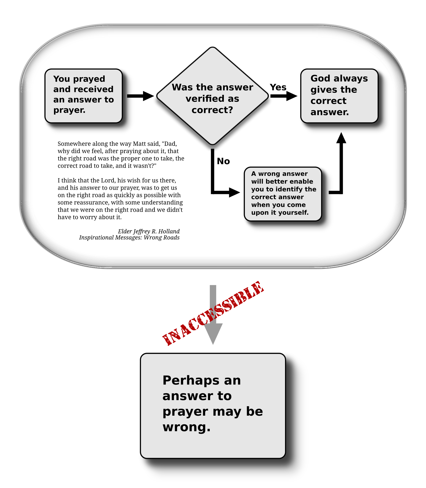
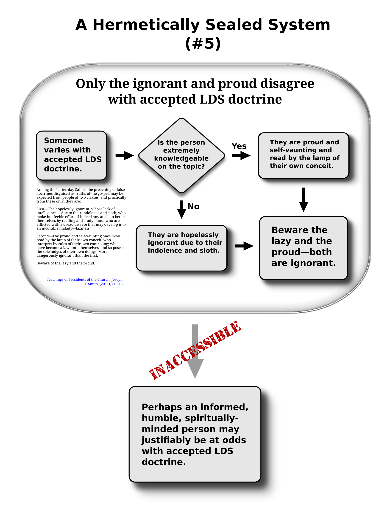
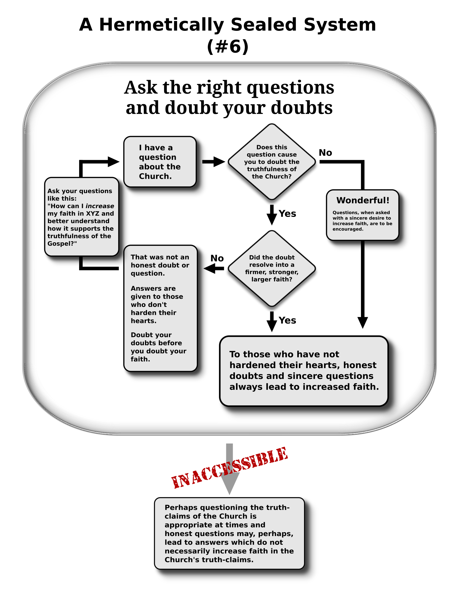

Hermetically Sealed Systems in LDS Thought
- Introduction
- Structure, Veracity, and Agency
- Hermetically sealed systems in LDS thought
- Supplements
- Appendix
- See also
Introduction
A hermetic seal is one which is entirely airtight. A hermetically sealed system of thought is, by analogy, one which is cutoff from, or virtually impervious to, outside ways of thinking.1

A hermetically sealed vial of Neon gas. By analogy, systems of thought can become closed off to some conclusions.
I propose that a hermetically sealed system of thought may be created when a person accepts one or more assumptions (sometimes unawares) which then prevent them from ever arriving at conclusions outside the resulting system of thought. From within the system it appears that the full range of choices and possibilities are available, but the thought structure (constrainted by the adoption of certain assumptions or premises) makes some conclusions impossible (or at least difficult) to access.
Hermetically sealed systems of thought, as described in this document, may be viewed as a subset of the greater socializing influence of the LDS Church and its culture which by some measure discourages members from exploring alternative approaches or worldviews. Alternatively, the systems of thought I diagram below may be viewed as a yet unprobed/untested variant of psychological phenomena that might influence a person’s choices, such as framing effects.
Structure, Veracity, and Agency
These diagrams say nothing (directly) about how well these systems of thought coincide with reality. However, examining the systems of thought in this form may make it easier for the reader to determine if the systems are veridical (i.e., coincide with reality). And, regardless of whether these systems of thought are veridical, their structure may demonstrate aspects of LDS thought which may inhibit members and investigators from exploring the full latitude of thought as they consider alternative models in approaching LDS truth claims.
Hermetically sealed systems in LDS thought
1. On seeking revelation

Figure 1: Do not seek revelation on that which contradicts the Brethren.
2. Divine origin of teachings

Figure 2: Revelations contradicting the Brethren are not from God.
3. Certainty of prayer

Figure 3: All answers to prayer are ultimately correct.
4. Moroni’s promise

Figure 4: Follow Moroni’s Promise to know that the Book of Mormon is true.
5. Those who preach false doctrine

Figure 5: Invariably, only the ignorant and proud disagree with accepted LDS doctrine.
6. Doubt your doubts

Figure 6: Ask the right questions and doubt your doubts.
Supplements
Supplement to Sealed System #4 (Moroni’s Promise)
Follow Moroni’s Promise to know that the Book of Mormon is true
Moroni’s Promise
3 Behold, I would exhort you that when ye shall read these things, if it be wisdom in God that ye should read them, that ye would remember how merciful the Lord hath been unto the children of men, from the creation of Adam even down until the time that ye shall receive these things, and ponder it in your hearts.
4 And when ye shall receive these things, I would exhort you that ye would ask God, the Eternal Father, in the name of Christ, if these things are not true; and if ye shall ask with a sincere heart, with real intent, having faith in Christ, he will manifest the truth of it unto you, by the power of the Holy Ghost.
5 And by the power of the Holy Ghost ye may know the truth of all things.
Pray about the Book of Mormon to know that it is true.
Behold, I would exhort you that when ye shall read these things … that ye would ask God, the Eternal Father, in the name of Christ, if these things are not true; …
Did you feel good or peaceful? Were you enlightened?
… he will manifest the truth of it unto you, by the power of the Holy Ghost. And by the power of the Holy Ghost ye may know the truth of all things.
The Preach My Gospel Manual (pg 103–104) contains a table which is meant to be used “to help others feel and recognize the Spirit.” The missionary is encouraged: “Think of times when you have experienced any of the feelings, thoughts, or impressions described in the passages below.” The following are included and are representative of the more generic aspects:
- “Gives feelings of love, joy, peace, patience, meekness, gentleness, faith, and hope.”
- “Gives ideas in the mind, feelings in the heart.”
- “Gives good feelings to teach if something is true.”
- “Enlightens the mind.”
- “Gives feelings of peace and comfort.”
Did you pray with a sincere heart?
Moroni 10:4 “… if ye shall ask with a sincere heart …”
Did you study it out first?
A revelation received during the translation of the Book of Mormon, D&C 9:7–8 (“Behold, you have not understood; you have supposed that I would give it unto you, when you took no thought save it was to ask me. But, behold, I say unto you, that you must study it out in your mind; then you must ask me if it be right …”) and the study that preceded the First Vision suggests to Latter-day Saints that “when ye shall receive these things” implies serious study.
Moroni 10:4 “… and when ye shall receive these things …”
Did you pray with real intent, having faith in Christ?
Moroni 10:4 “… with real intent, having faith in Christ …”
“Praying with Real Intent” Ensign, Feb 2016.
One afternoon they [the missionaries] asked me, “Have you prayed to find out if what we are teaching you is true?”
I told them I had but had not obtained any answer.
“You must pray with real intent,” they said.
Did you ask God in the name of Jesus Christ?
Moroni 10:4 “… ask God, the Eternal Father, in the name of Christ …”
Latter-day Saints believe this is important to receiving an answer.
Did you ponder on the mercy of God first? Did you read the Bible first?
A common interpretation (taught in the Scotland, Edinburgh mission while I was there from 1995–1997, for instance) is that a person must also read and study the Bible because otherwise how can they ponder on how God has dealt with the children of men from the creation of Adam until the present time?
3 Behold, I would exhort you that when ye shall read these things, … that ye would remember how merciful the Lord hath been unto the children of men, from the creation of Adam even down until the time that ye shall receive these things, and ponder it in your hearts. [emphasis added]
Have you prayed tens or hundreds of times?
There are many examples of leaders or members encouraging people to continue trying if they do not receive an answer. In some cases, the suggestion is that it may take many years before receiving confirmation.
“Securing Our Testimonies”. Donald L. Staheli. General Conference, Oct 2004.
Recently I had an engaging conversation with a young man who was contemplating a mission. As we talked, it became apparent that he was struggling with his decision, because he was questioning the strength of his testimony of the gospel of Jesus Christ. He wanted to know why he had not received more clear answers to his prayers and study of the scriptures.
…First, we must have a sincere desire to believe. Phrases such as “awake,” “arouse your faculties,” “experiment,” and “exercise a particle of faith” are action words that suggest sustained effort on our part.
…To my young friend, and to all wherever you may be, never give up on the Lord. The answer to your prayers may not be as clear or as timely as you would like, but keep praying.
I've gone to church the last two Sundays and I think it's fantastic. I really like a lot of the ideals of the church. I'm already living by the word of wisdom, and I'm following the commandments, and reading the scriptures, and I'm praying. I keep waiting for an answer, anything. But I'm not getting a thing. The missionaries say to keep praying, and to pray with more specific questions, but no matter what I try I'm just not getting any answers.
Or,
If you keep trying, things will only get better. Keep pushing forward and remember; the amount of effort you give is more important than the amount of success…. Don't stop praying and have patience.
Or,
Keep praying, I didn't get an answer for 15 years...
You’ve always known that it’s true. Stop asking God for a sign.
“What You Knew in the Premortal Life”. New Era. Sep 2015.
I can remember sitting in the back row of the chapel as the instructor began teaching about the Prophet Joseph Smith. I’ll never forget it. It was a riveting moment of clarity. I was completely tuned in to the story. As it culminated and the teacher bore testimony, I knew that I knew it was true. I just knew it. But more importantly, I realized that I’d always known it was true; this was just the first time I’d realized it.
If you’re trying to gain a testimony of the Church, don’t be tempted to think, like Laman and Lemuel, that “the Lord maketh no such thing[s] known unto [you]” (1 Nephi 15:9). Don’t think that receiving such a testimony is beyond your reach. These tempting lies could never be true.
[]{#anchor-3}Gaining a testimony isn’t about learning something new or even finding something that you’ve never known. It’s about understanding your divine identity and remembering the things that you’ve always known to be true.
“You’ve always known.” New Era, June 2006.
I believed that Heavenly Father and Jesus Christ had spoken to Joseph Smith when he was 14, so I thought that since I was now 14, Heavenly Father could tell me, too. I didn’t expect a vision, but I believed God would somehow let me know if this was His Church. I decided that as soon as the testimony meeting ended, I would go a little ways from the lodge among the trees to kneel and pray as Joseph had.
During the meeting, I listened intently to the testimonies, and I recognized that the Spirit was very strong. My sister’s friend stood to bear his testimony. As he said the words, “I know the Church is true and that God lives,” I heard a still, small voice whisper within me: “You know it’s true, too. You’ve always known.” Tears filled my eyes because I knew God had heard my prayer before I had even spoken it.
“I Wanted Proof.” New Era, Feb 1998.
After reading the Book of Mormon, I knelt in prayer. I had a great desire to know of its truth. I hoped it was true, knowing what joy this would bring me. That night I prayed for hours desiring to know. The following nights I continued in my prayers and began to wonder if I would receive a witness.
My determination in waiting for a witness was a trial of my faith. After many days I came to the realization that I knew the Book of Mormon was true. It came not as a sign or a voice. I knew because in the center of my being I could not deny that it was true. I also knew that God existed and that he is my Heavenly Father, that Jesus Christ is the only begotten son of God.
This came to me, not as new knowledge, but as a peaceful remembrance of that which I already knew. I did not need a further witness. I had always known the truth. My pride in my own knowledge had caused me to forget my testimony.
“Is It True?” New Era, Feb 1999.
I had already read the Book of Mormon several times, both with my family and on my own. Every time I read it, I would pray to know if the words I received were true. I never felt like I received a firm answer to those prayers, and over time I grew more and more discouraged. I was afraid that not receiving that witness meant that the Church wasn’t true.
But I was determined to try again. I began reading the Book of Mormon again, studying and pondering it as I had never done before. Near the end of the fall semester at college, I finished the Book of Mormon. I sat on my bed and thought a lot about how I should go about asking again. Tears flowed down my cheeks as the fear of not being answered crept over me. I prayed to Heavenly Father and told Him how I was on my own now and needed a witness that the Book of Mormon was true. At the end of my prayer I waited and waited, but once again, no answer came. I felt a deep weakening in my heart, and I cried because once again my prayers seemed to have failed.
The next morning I attended my religion class. My teacher began to talk about prayer. In the course of his lecture he said, “Don’t ask the Lord a question you already know the answer to.” I immediately felt the Spirit, and three words entered my mind, “You already know.” I realized that I already knew that the Church and the Book of Mormon were true. My mind filled with thoughts of how I knew it was true. I thought about the joy the gospel had brought into my life. I thought of the peace and happiness that I always felt when I was living the commandments. I thought of the many times I had felt the Spirit.
Now if I get discouraged as I work to build a testimony of my own, I remember the joy the gospel has brought me throughout my life. I remember the times I have felt the Spirit. And I don’t discount the subtle reassurances I have felt of the gospel’s truth.
[Example of how such an approach influenced one seeker: “Don’t ask the Lord a question you already know the answer to.”]
Don’t ever accept no for an answer…Ask 3 or 4 times in different ways.
Utah Areas Annual Mission Presidents Seminar. Sep 2015.
[Depicts the general attitude of missionaries to negative responses to any part of their message or invitations to make the next commitment.]
They will get to yes one no at a time: a. Don’t ever accept no for an answer. b. Help them build faith beyond the first no. c. Ask three or four times in different ways. d. Do something positively different (e.g. after the last no, ask if “we can sing you a song” or “show you a picture of their family”) after the third or fourth no.
Why would God answer when you took not thought except to ask.
7 Behold, you have not understood; you have supposed that I would give it unto you, when you took no thought save it was to ask me.
The Book of Mormon is true
4 … he will manifest the truth of it unto you, by the power of the Holy Ghost.
5 And by the power of the Holy Ghost ye may know the truth of all things.
Supplement to Sealed System #6 (doubt your doubts)
Honest doubts lead to increased faith.
“What to Do When You Have Questions”. Ensign. May 2012 (quoting Howard W. Hunter, Oct 1960 General Conference; Also quoted in Teachings of Presidents of the Church: Howard W. Hunter, ch 21). Emphasis added.
I have sympathy for young men and young women when honest doubts enter their minds and they engage in the great conflict of resolving doubts. These doubts can be resolved, if they have an honest desire to know the truth, by exercising moral, spiritual, and mental effort. They will emerge from the conflict into a firmer, stronger, larger faith because of the struggle. They have gone from a simple, trusting faith, through doubt and conflict, into a solid substantial faith which ripens into testimony.
Answers given to those who don’t harden their hearts.
“A Pattern for Learning Spiritual Things”. Seminaries and Institutes of Religion Satellite Broadcast. August 7, 2012 (quoted in Lesson 10: Seek Truth, Foundations of the Restoration Teacher Manual).
Answers to spiritual questions are given to individuals who don’t harden their hearts; who ask in faith, believing they will receive; and who diligently keep the commandments.
Ask the right kind of questions.
“Will You Engage in the Wrestle?”. Sheri Dew. BYU Idaho Devotional.
As seekers of truth, our safety lies in asking the right questions, in faith, and of the right sources—meaning those who only speak truth: such as the scriptures, prophets, and the Lord through the Holy Ghost.
“What to Do When You Have Questions.” Youth article on lds.org.
There are basically two different ways we can approach our questions. For our purposes here, we’ll distinguish between these approaches by labeling them questioning and asking questions. When it comes to matters of faith, there can be a pretty big difference between the two. The difference has to do with how and why you’re asking the questions, what you hope to gain from them, and where they’ll eventually lead you.
Questioning, here, refers to challenging, disputing, or picking something apart. When it comes to religion, the result of this approach is often not to find answers but rather to find fault and destroy confidence.
On the other hand, in religion, just as in science or anything else worth studying, it’s absolutely essential to ask questions, even difficult ones. It’s the only way you’ll get answers. And answers mean greater knowledge and understanding—and in the case of religion, greater faith and spirituality.
So, your attitude and your motive in asking a question can make all the difference in where it will eventually lead you. For instance, if you’re studying the scriptures and come across a passage that seems to contradict a Church teaching or a scientific or historical fact, there’s a big difference between asking “How could the scriptures (or the Church) possibly be true if … ?” and asking “What’s the full context of this passage and what does it mean in light of … ?” The first question may lead you to a hastily drawn conclusion based on skepticism and doubt rather than actual knowledge or logic, whereas the second is more likely to lead you to greater insight and faith.
… I have tried multiple times to describe in writing that how we ask questions about our faith is more important than the questions themselves. … Instead of forcing a conflict between Joseph Smith’s calling as prophet and the modern translation of ancient texts, a better set of questions might include things like “If we assume modern translations of the papyrus are correct, what can we learn about how Joseph Smith received revelation?” or “What does Joseph Smith’s experience in trying to translate teach me about revelation for myself?” or “What can I learn about my assumptions based on this information?”
Sincere questions lead to greater faith.
“When Doubts and Questions Arise”. Ensign. March 2015.
Questions, when asked with a sincere desire to increase one’s understanding and faith, are to be encouraged...
Sincere questions are those asked with the “real intent” (Moroni 10:4) to better understand and more fully obey the will of the Lord... There is no suggestion in the scriptures or the teachings of the prophets that encourages doubt.
Doubts occur because you are sinning.
“When Doubts and Questions Arise”. Ensign. March 2015.
As doubts arise, it may be useful to honestly ask yourself, Is there something I am doing or desiring that is contrary to the gospel? If you answer yes, seek help from your bishop.
Letting your doubts justify your sins is never a successful substitute for repenting.
Doubt your doubts
“Come, Join with Us”. Dieter F. Uchtdorf. Oct 2013 General Conference.
… doubt your doubts before you doubt your faith.
Appendix
Appendix 1 - Examples from other groups
Some examples from other totalistic groups are easy to identity and show similarities with some LDS hermetically sealed thought. The following are two examples from the Jehovah’s Witnesses.
Example 1: do not communicate with former JWs
Assumed: To love God means to entirely avoid communication with a former Jehovah’s Witness.
Innaccessible: Exposure to criticism from former Jehovah’s Witnesses.
Example:
…should we listen to apostates, read their literature, or examine their Web sites on the Internet? If we love God and the truth, we will not do so. We should not allow apostates into our homes or even greet them, for such actions would make us ‘sharers in their wicked works.’ (2 John 9-11) (source)
Example 2: will miss the good if you focus on the bad
Assumed: You will miss the good and only see bad if you focus on the flaws of the organization or leaders.
Innaccessible: Aspects of the organization or the actions or teachings of some leaders may be ethically deficient but may be un-observable if one only focuses on the good.
Example:
Every person in this organization–every one of Jehovah’s Witnesses including the governing body–we’re all imperfect and thus we are subject to making mistakes. Which means that if you look hard enough, all you will see instead of seeing these amazing things that Jehovah is accomplishing and our tremendous privilege of being part of it, all we are going to see is the errors of men. But when we focus on the good, on the guidance and loving support that we’ve received, aren’t we moved with appreciation to cleave to this body of fellow worshipers. And just look at what Jehovah is accomplishing by means of his imperfect servants. There is no other organization on earth providing spiritual food like the one that we belong to. When we look at all of this, how could we possibly let the failings of just a few people undermine this overwhelming proof of Jehova’s backing? (From the 2016 “Remain Loyal To Jehovah” regional convention)
Appendix 2 - Potential Criticisms
I have encountered some criticism of this work in public discussion and can imagine other potential criticism. I will present the criticism and then some thoughts on its validity.
The diagrams are too reductive.
One might argue that LDS thought allows for the contemplation of the inaccessible thoughts in other ways or contained in other leader statements not represented here.
Response: There is some validity to this concern. A more complete analysis might assemble every statement (or some large sampling) made by leaders or in lesson manuals on a topic and examine the frequency of a particular logical path in all the relevant statements. A single example cannot demonstrate the predominance of such a thought-pattern, only that such a routing exists and has been employed in official LDS material in at least one instance. I have made an effort to include patterns that seem dominant (or frequent) to my mind, but without demonstration a person may easily argue that it does not represent the sum of the data or of their personal experience.2
No guarantee of inaccessibility
The explicit enumeration of choices by itself does not guarantee the inaccessibility of the outside conclusion.
Response: Because LDS thought extends beyond any individual statement and the realm of philosophical thought broadly construed can be viewed as superseding LDS theology or doctrine narrowly defined, that will always be true. Still, when the explicit enumeration of choices does not include a particular possibility, it seems reasonable that a member is then required to shoulder the burden of injecting, mentally constructing, or borrowing such a possibility on their own, and this may not reliably occur and arguably requires more effort to summon. In any case, it seems reasonable to assume that a person is likely to spontaneously produce alternatives less frequently in instances where the alternative is not enumerated.
Every system of thought is hermetically sealed
It may be argued that all systems of thought are hermetically sealed in some fashion.3
Response: In 1931 Kurt Gödel demonstrated that to some extent, all logical systems contain one or more true statements which are inaccessible from within that system and the system itself cannot demonstrate its own consistency. Such is the case, for instance, with the scientific method (e.g., the scientific method is incapable of demonstrating that the method itself is valid—demonstrations of that kind lie outside the scientific method). Further, many domains which we typically acknowledge as conveying intrinsic value still suffer from foundational instabilities.4 In some sense, then, demonstrating which statements are inaccessible from within a system of thought does not, by itself, demonstrate the system invalid. Regardless, it still seems reasonable to think that examination of inaccessible (or at least difficult to access) statements may be a fruitful exercise and differences in topology between systems may mean some are more or less open to scrutiny or more or less prone to circularities than alternatives.
“Brainwashing” is not scientific
One might argue that discussing thought patterns in this form is similar to counter-cult research seeking to demonstrate “mind-control” (which ultimately has been of dubious value), and most of these ideas have a tenuous relationship (at best) with mainstream psychological research.
Response: Significant endeavors that seem somewhat similar to cataloging hermetically sealed systems generally include Robert J. Lifton’s Thought Reform and the Psychology of Totalism, the DIMPAC report (which was dismissed by the American Psychological Association), Steven Hassan’s BITE model (outlined in his dissertation and applied in one peer reviewed article) and more generally the idea of the thought-terminating cliche, indoctrination (or socialization), and linguistic relativity. Some of these ideas have been rejected by mainstream scientists (e.g., the DIMPAC report) and many others are under-developed academically (e.g., indoctrination, thought-terminating cliche), or lack widespread academic adoption (e.g., the BITE model).5 I am aware of some of the controversies with the work and frameworks listed above and have argued in favor of academically mainstream approaches (e.g., my argument against using the BITE model to label the LDS Church a “cult” and dismissal of the idea of “brainwashing” in favor of a social learning framework).
Regardless, exploration of hermetically sealed systems of thought seems to be at home among legitimate psychological research demonstrating, for instance, the human propensity to be swayed by framing effects.
See also
- An early PDF version of this document
-
Deconstructing Mormonism: An Analysis and Assessment of the Mormon Faith (Thomas Riskas)
- Review of Riskas’s book (Kevin Christensen)
- Recovering Agency: Lifting the Veil of Mormon Mind Control (Luna Lindsey)
-
As indicated, a hermetic seal was originally used to describe a physical phenomenon. The term “hermetically sealed” appears to have been used somewhat abstractly at least by the early 1800s (e.g., pg 4 of this 1808 book or criticized in this 1816 Irish publication. In more modern times, it is commonly used in the same fashion as I have used it here (e.g., Keesing, “Their cultures are hermetically sealed, beyond the reaches of time and the world system.”; Or in this 2017 abstract, “The … medical approach represents a paradigm shift from a strictly biomedical view of health and disease taken as hermetically sealed compartments to a more interdisciplinary one.”) ↩
-
Thomas Riskas in Deconstructing Mormonism: An Analysis and Assessment of the Mormon Faith examines various circularities and deficiencies within LDS theology and practice from a more philosophical perspective, likening believers to being trapped in a box with instructions for exit on the outside. A full review of Riskas’s work is outside the scope of this short essay, but in his review of Riskas, Kevin Christensen basically argues that Riskas is guilty of leaning too heavily on logical positivism without acknowledging its inherent circularities. I have tried to steer clear of insinuating the supremacy of alternative systems of thought and freely acknowledge intrinsic limitations of all frames of reference. ↩
-
An example of a useful discipline that has been dogged with foundational instability is the field of psychology as discussed by Yurevich in 2009. ↩
-
Within the realm of LDS thought, Luna Lindsey Corbden explores modes of influence and persuasion from a psychological perspective in Recovering Agency: Lifting the Veil of Mormon Mind Control. In public discussions of the book (for example) she tends to acknowledge deficiencies of the counter-cult frameworks, but it is not clear if Corbden fully transcends those concerns within the book itself, which tends to lean on the frameworks of Lifton and Hassan. ↩